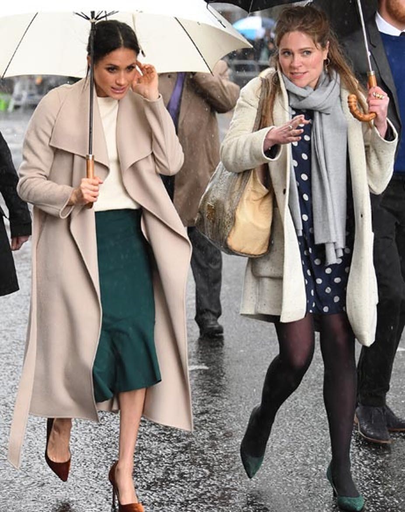
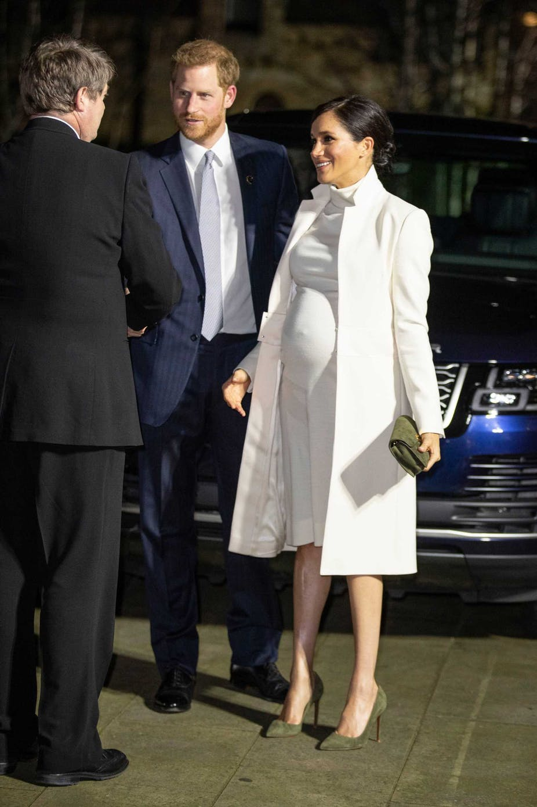

Hertuginde Meghan mister højre hånd
Hertuginde Meghan må sige farvel til endnu en ansat. Hendes højre hånd Amy Pickerill stopper således ved udgangen af denne måned
Hun har mistet ikke bare én, men hele tre assistenter på kort tid.
Og den seneste i rækken til at sige farvel må siges at være et hårdt slag for hertuginde Meghan.
Ifølge Daily Mail har hertuginde Meghans højre hånd nemlig valgt at opsige sit job som personlig assistent.
Artiklen fortsætter under billedet...
Amy Pickerill har ellers været en af de drivende kræfter i at hjælpe 37-årige Meghan med rollen som hertuginde, efter Meghan blev gift med prins Harry i maj 2018.
Amy Pickerill blev ansat sidste år og blev hurtigt betragtet som en af hertugindens vigtigste hjælpere.
Ifølge Daily Mail vil Amy Pickerill forlade den royale familie helt og flytte over Atlanten.
En ven tilføjer dog over for det britiske medie, at der ikke er ond stemning mellem Amy Pickerill og hertuginden:
Artiklen fortsætter under billedet...
- Hun (Amy Pickerill, red.) har endda tilbudt stadig at hjælpe til, når den lille ny kommer og hjælpe dem med at organisere deres nye hushjælp, men derefter vil hun rykke helt videre, siger kilden til Daily Mail.
Med farvellet til Amy Pickerill har hertuginden mistet hele tre assistenter inden for relativ kort tid.
Sidste år i slutningen af november valgte 39-årige Melissa Toubati at forlade jobbet hos hertuginde Meghan – eftersigende fordi hertuginden var svær at arbejde sammen med, hvilket resulterede i, at Melissa Toubati brød sammen.
Artiklen fortsætter under billedet...
Kort efter kom det også frem, at Samantha Cohen forlod det britiske kongehus efter hele 17 års tro tjeneste.
Samantha Cohen havde i mange år været privatsekretær for dronning Elizabeth, men trådte tilbage fra den rolle i 2017 for at blive sekretær og assistent for Meghan og Harry.
Meghan og Harry bliver efter planen forældre til deres første baby om få måneder.